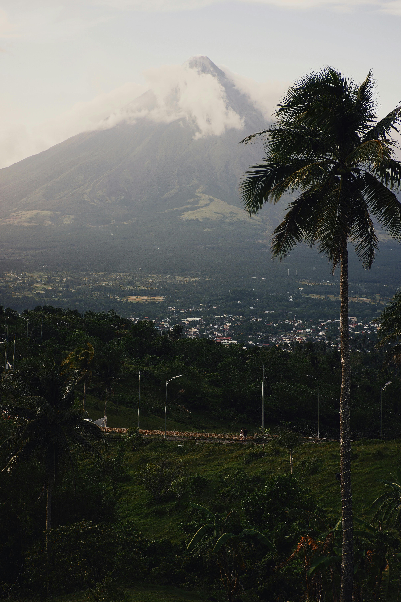
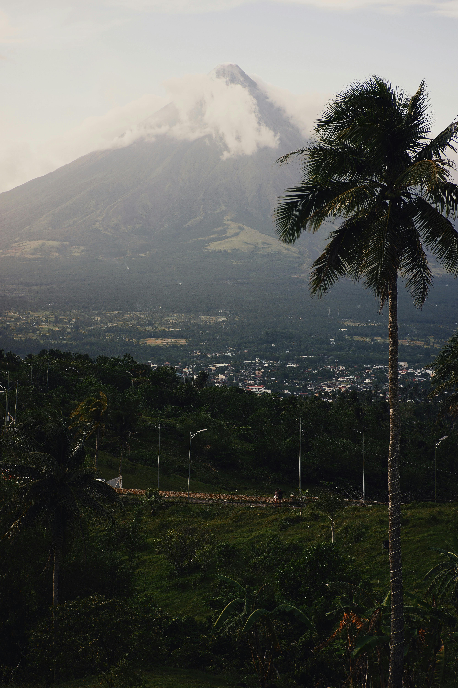
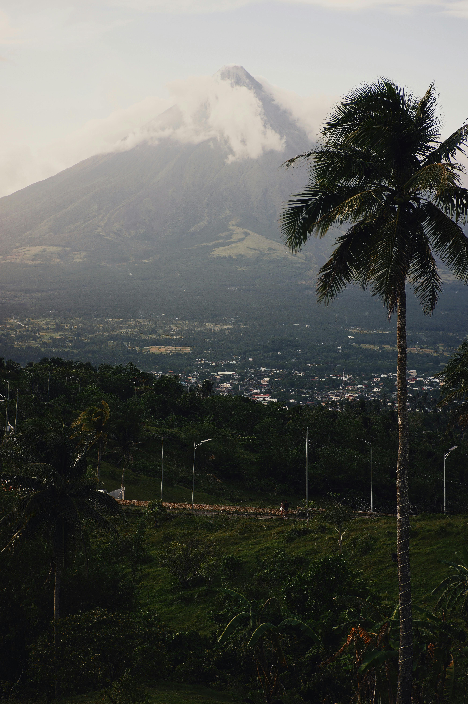

Mt. Mayon Gallery
Scroll through these breathtaking photos showcasing the natural beauty and majestic view of Mount Mayon.

 

Mount Mayon, located in Albay, Philippines, is famous for its perfectly symmetrical cone shape. Known as the “World’s Most Perfect Cone,” it rises majestically to 2,463 meters. Aside from its breathtaking beauty, Mayon is an active volcano that holds great cultural and historical significance. Tourists enjoy sightseeing, hiking, and capturing its stunning view, especially at sunrise or sunset.
Scroll through these breathtaking photos showcasing the natural beauty and majestic view of Mount Mayon.
